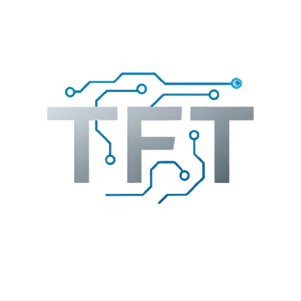

Nosso Projeto Atual
Fábrica de Códigos

A Fábrica de Códigos é uma empresa brasileira de tecnologia especializada no desenvolvimento de soluções de software com foco em flexibilidade, escalabilidade e integração para o setor de e-commerce. Com sede em Marília, São Paulo, a empresa oferece produtos e serviços que atendem às necessidades de empresas que buscam otimizar suas operações online.
InfoCode
O InfoCode é mais do que um simples leitor de código de barras — é uma plataforma que transforma o ato de escanear em uma experiência completa de venda e gestão. Ao identificar o produto, o sistema exibe suas informações em tempo real, conecta com o estoque e agiliza o processo de venda, independente do tamanho da operação.